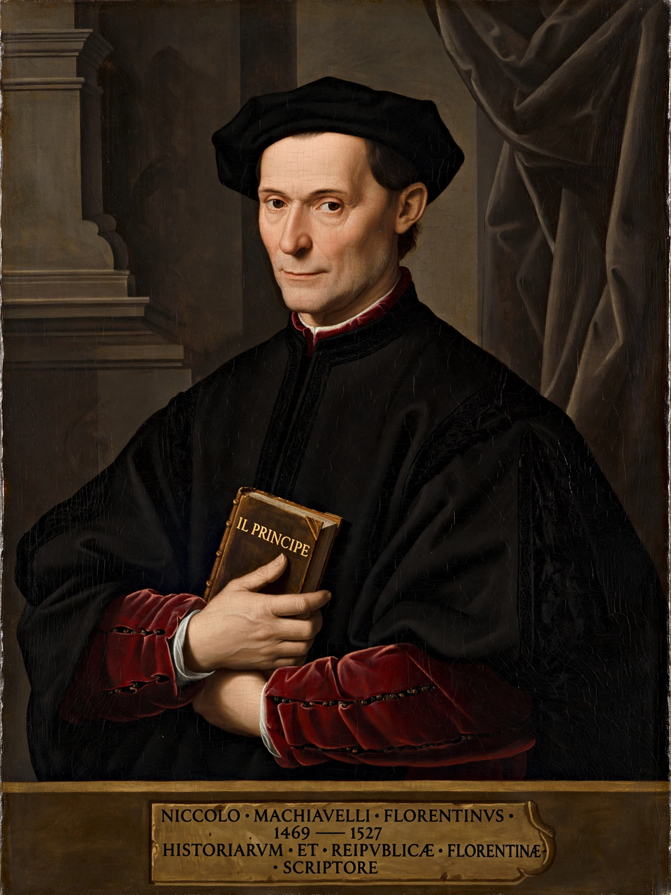

Niccolò di Bernardo dei Machiavelli (3 May 1469 – 21 June 1527) was an Italian diplomat, author, philosopher, and historian who lived during the Renaissance. He is best known for The Prince (Il Principe), written in 1513 and published posthumously in 1532, which examines how rulers acquire and maintain political power. He is often called the father of modern political theory and political science.
Machiavelli served the Florentine Republic as a senior official and diplomat from 1498 to 1512, undertaking missions to the courts of France, Spain, and the Papacy and observing figures such as Cesare Borgia. When the Medici returned to power in 1512 he was dismissed, briefly imprisoned and tortured on suspicion of conspiracy, and retired to his farm at Sant'Andrea in Percussina, where he wrote his major works, including the Discourses on Livy, a commentary favouring republican government.
The Prince advises rulers — particularly new princes — to learn "how not to be good" and to use virtue or vice as necessity requires. Its key concepts include virtù (the skill and boldness to impose form on events) and fortuna (chance), which the effective ruler must master or prepare against. The book's frank treatment of deception and cruelty scandalised contemporaries and gave rise to the adjective "Machiavellian".
Scholars debate whether The Prince is a sincere handbook for tyrants, a satire, or a coded plea for the liberation and unification of Italy — its final chapter exhorts a redeemer to free Italy from foreign domination. Read together with the republican Discourses, Machiavelli is seen as a theorist of civic liberty, military citizenry, and institutional conflict. His separation of politics from conventional morality made him a foundational, and persistently controversial, figure in Western political thought.
See also: The Prince · Discourses on Livy · Machiavellianism